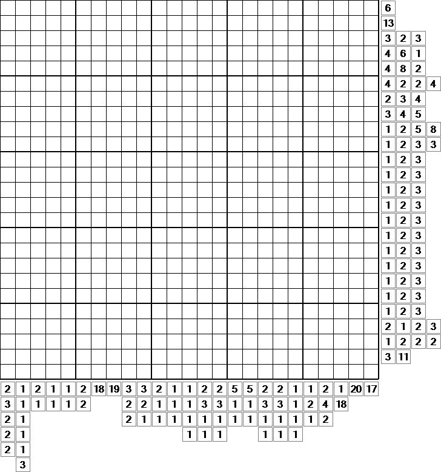

Codes and Cryptography
Welcome to Chapter 1! This is a tutorial on how to solve puzzles! You will be learning many things here, such as common codes and ciphers, or even tips and tricks! Ready? Let us begin!
So... the common question. What are puzzles and how do we solve them? Puzzles have many meanings, whether it be a game or toy designed to test for your knowledge, or a person or thing that's difficult to explain. A puzzle manages to make us confused because we do not understand it. Well, there are many different types of puzzles! Many of which, we have seen before. There are logic puzzles, math puzzles (like those in your exams), ciphers, jigsaw puzzles... the list goes on and on. This guide will be covering two main forms of puzzles - logic puzzles and ciphers.
Logic puzzles, essentially, require you to use your logic in order to make deductions to solve them, such as puzzles which require you to think outside the box and those that give a set of rules, from which the solution can be derived. An incredibly simple example of the former would be the riddle 'A man lives in a one-storey house. The walls are pink, the door is pink, the furniture is pink. What colour is the stairs?', with the answer being, of course, that the house has no stairs. Of course, most logic puzzles are more complicated than that. A very well-known example of the latter would be Sudoku, requiring you to use its rules in order to solve it.
If you are interested, here is a Nonogram puzzle for you! The solution is here!
Ciphers, meanwhile, are hidden messages encoded in a certain way. In most games, clues related to their encryption are also given. For example, if there was a hidden message encoded with the Vigenere key 'twitter' (more on that later), a clue would be 'that blue bird'.
Well done! You finished Chapter 1! Click here to head to Chapter 2!